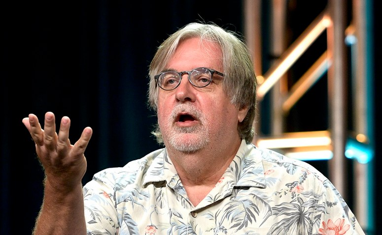

LES SIMPSON
Les Simpson (The Simpsons) est une série télévisée d'animation americaine créée par Matt Groening et diffusee depuls le 17 décembre 1989 sur le reseau de l'entreprise americaine Fox Broadcasting Company. Elle met en scene les Simpson, stereotype d'une famille de classe moyenne1,2. Leurs aventures servent une saure du mode de vie américain. Les membres de la famille. tous ayant la pigmentation de peau de couleur Jaune. sont Homer, Marge. Bart. Lisa et Maggie. Depuis ses débuts, la série a récolté des dizaines de récompenses. dont vingt-quatre Primetime Emmy Awards. vingt-six Annie Awards et un Peabody Award. Le Time Magazine du 31 décembre 1999 l'a désignée comme la meilleure sérle télévisée du xxe siécle et elle a obtenu une étoile sur le Walk of Fame d'Hollywood le 14 Janvier 2000. • D'ohl », lexpression d'abattement d'Homer Simpson. est entrée dans la langue anglaise. L'influence des Simpson s'exerce également sur d'autres sitcoms. En 2007, Les Simpson, le fim, un long métrage basé sur la série, est sorti au cinéma et a recuellli 527 millions de dollars américains en recettes brutes3.

Matt Groening
Matthew Abram Groening est un dessinateur, scénariste et producteur de télévision américain. Il est le créateur du comic strip Life in Hell et des séries télévisées d'animation Les Simpson et Futurama.